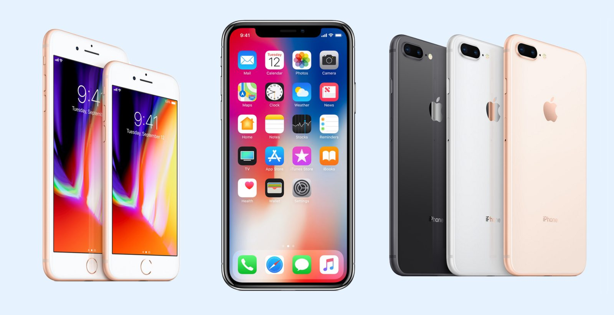
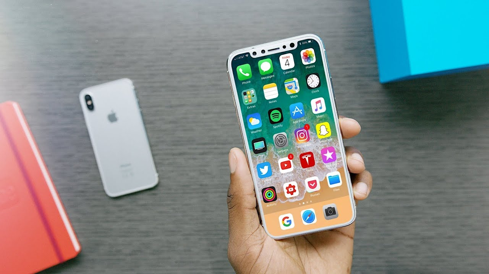
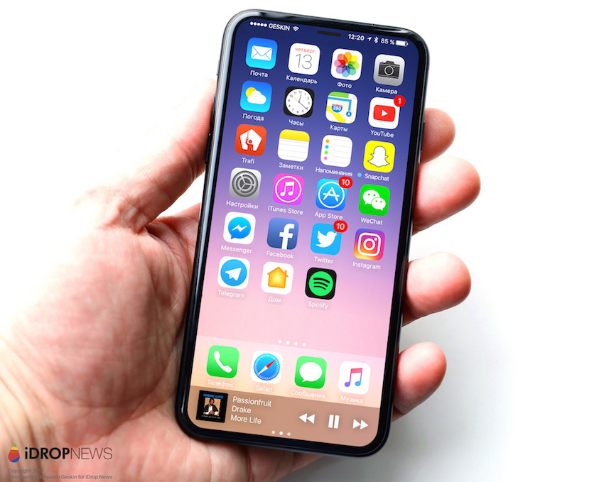
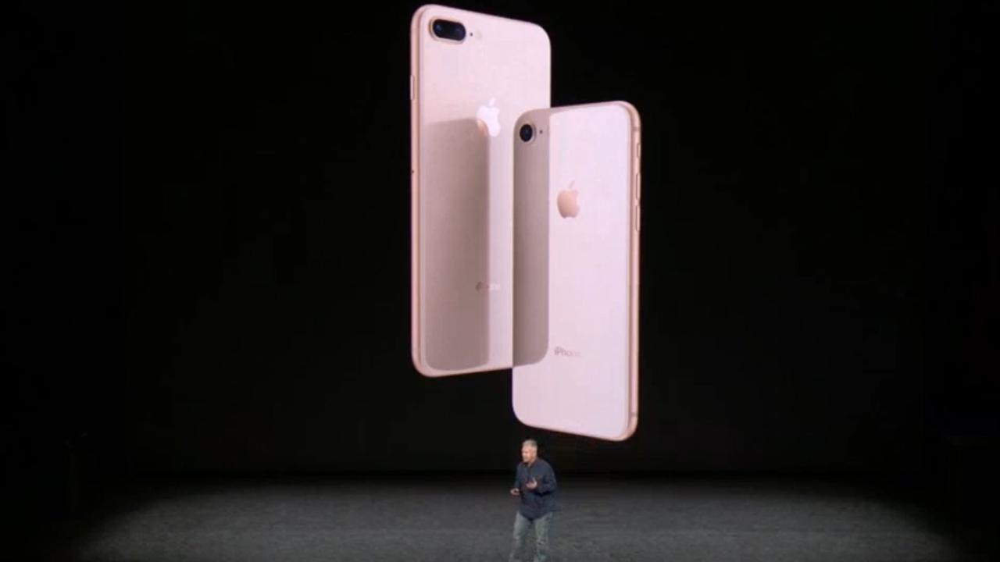
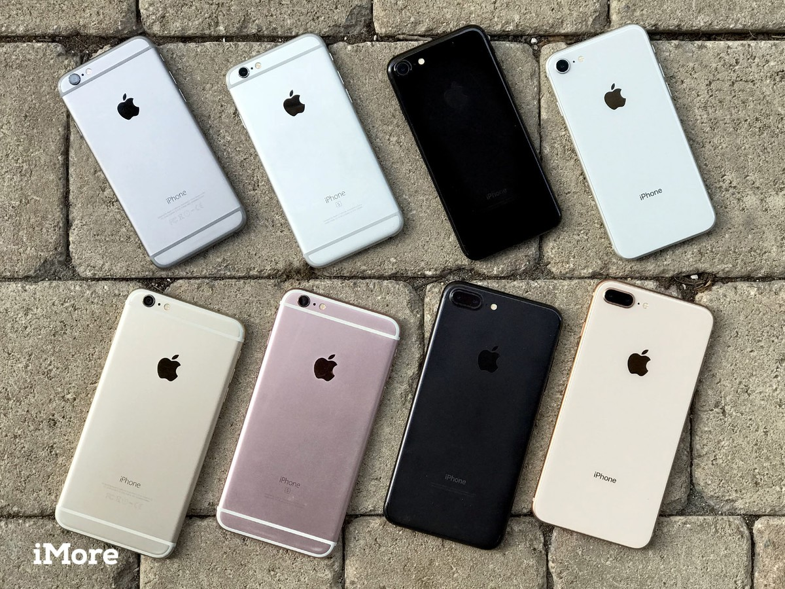
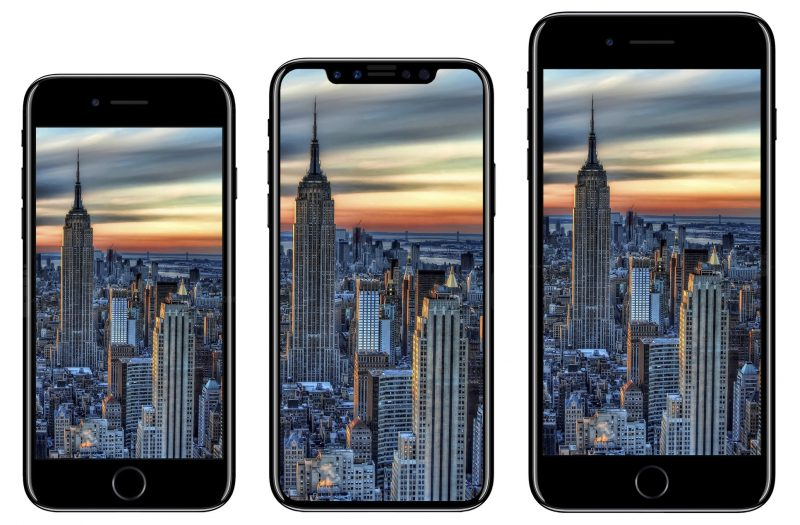

Iphone 8 The new one
New Generation
PRODUCT DESCRIPTION
iPhone 8 and iPhone 8 Plus are smartphones designed, developed, and marketed by Apple Inc. They were announced on September 12, 2017,[3] alongside the higher-end iPhone X at the Steve Jobs Theater in the Apple Park campus by Apple CEO Tim Cook, and were released on September 22, 2017,[4] succeeding the iPhone 7 and iPhone 7 PlusBesides the addition of a glass back, the design of the iPhone 8 is largely similar to that of its predecessor. Notable changes include the addition of wireless charging, a faster processor, and improved cameras and displays.
Reception of the phone was mixed, with reviewers praising the addition of wireless charging and the new Apple A11 processor, while also criticizing its aging design and lack of new features introduced.The iPhone 8 and 8 Plus retain the Retina HD Display found in the iPhone 7, but they now have True Tone technology, which also can be found on the iPad Pro and the higher-end iPhone X.
The iPhone 8 and 8 Plus shipped with iOS 11.0 on launch.
|  |
|  |
|  |
|  |
|  |
|  |
BENEFITS
The iPhone 8 and 8 Plus received mixed reviews from critics.[11][12] Reviewers praised the speed of its processor, the updated camera, and the inclusion of non-proprietary wireless charging.[13] However, the iPhone 8 was criticized for its aging design and thick bezels dating back from 2014, while several competing smartphones had moved to nearly bezel-less designs to incorporate larger screens in a similar form factor to the iPhone 8 Plus, including Apple's own iPhone X.[14][15][16] The iPhone 8 and 8 Plus were also criticized for their durability, as drop tests performed by reviewers showed that the rear glass on the 8 and 8 Plus is not "the most durable glass ever in a smartphone", as claimed by Apple.[17][18].
new
Although Apple has yet to release official sales information, initial reports indicate that sales have been very low and that more people are buying its predecessor instead.[19][20] This has resulted in a drop in Apple's shares.[21]
Offset: 5mm